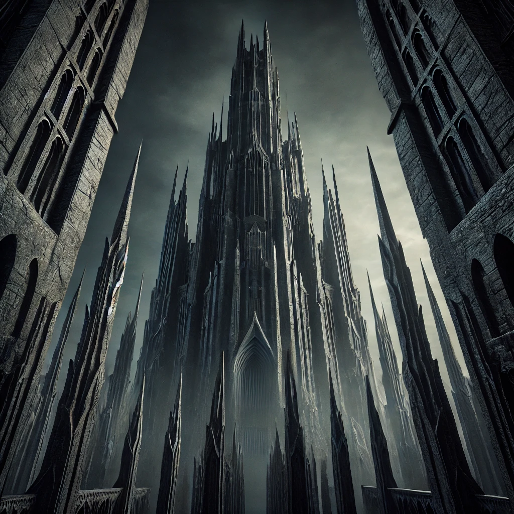
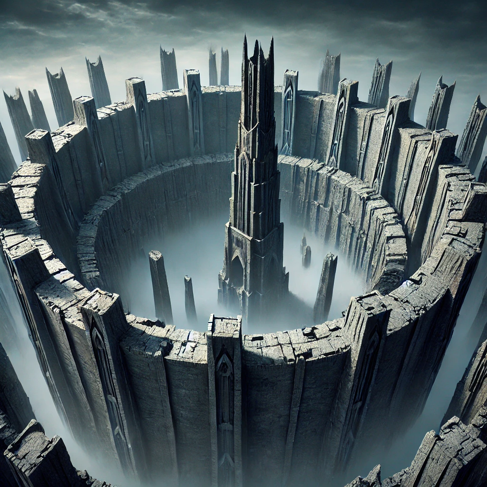
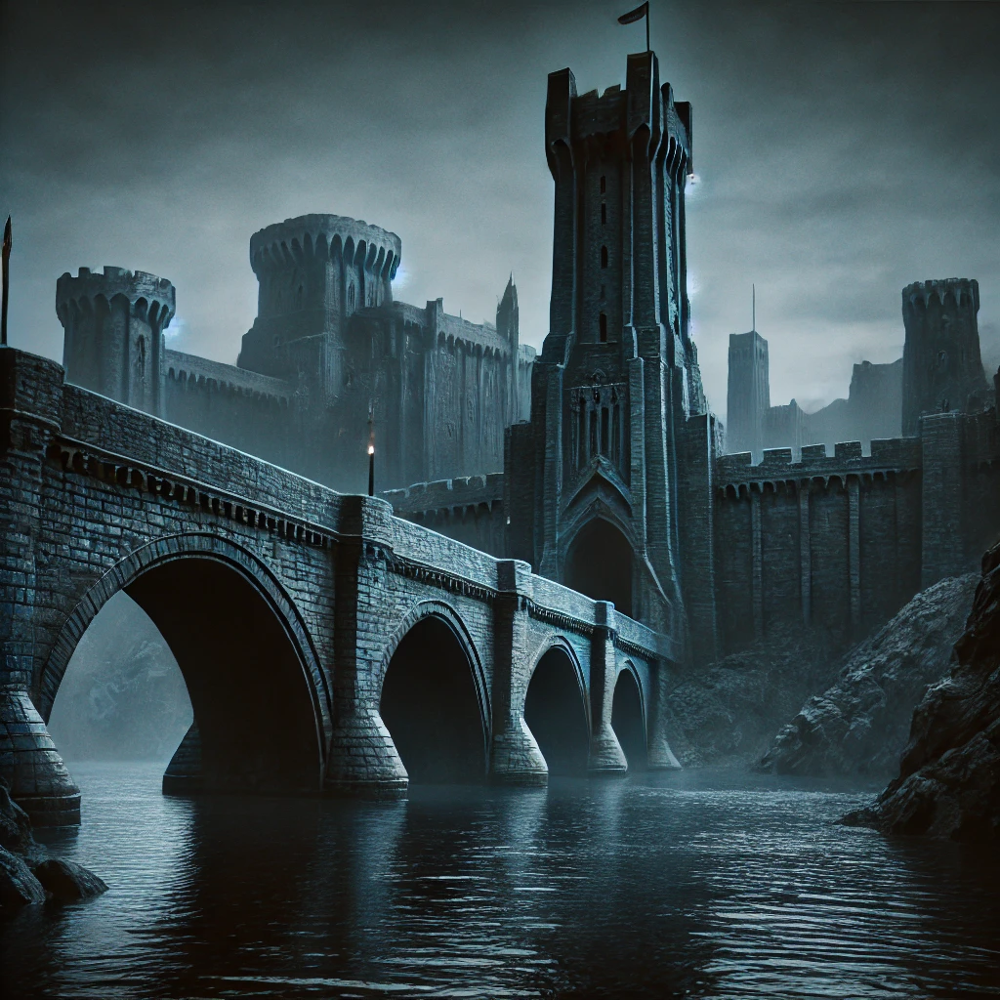
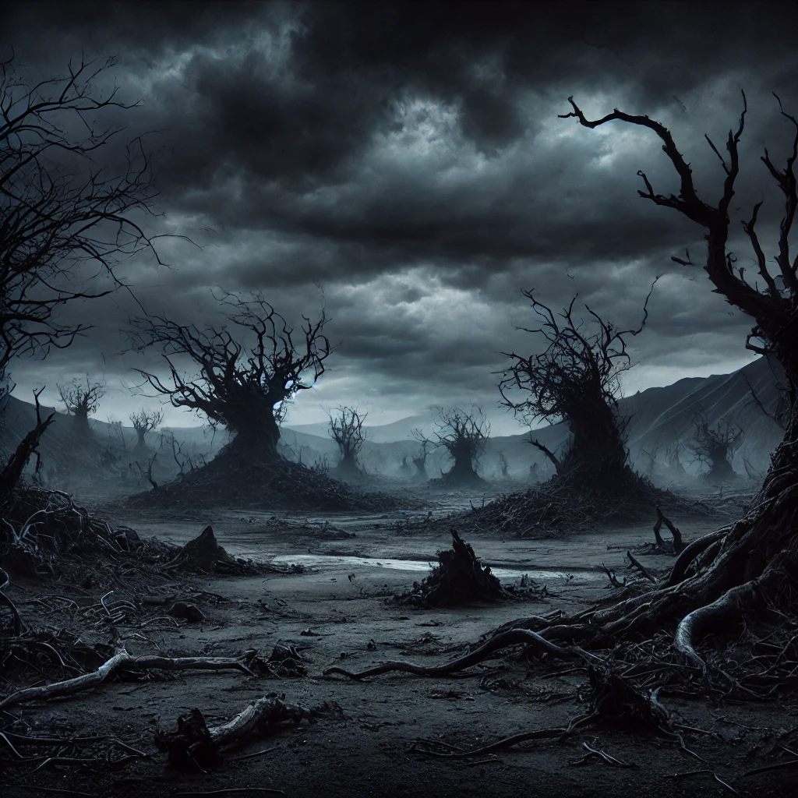

Isengard
Isengard es una fortaleza oscura rodeada por un anillo de piedra, dominada por la Torre de Orthanc, donde residía Saruman. Con una atmósfera inquietante y poderosa, es un destino para quienes buscan aventura en los límites del poder antiguo.



